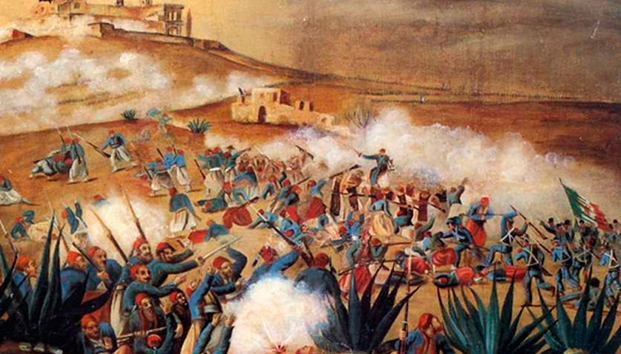

Datos personales del alumno
Foto del Perfil
Esta es mi imagen de perfil:

Esta es mi imagen de perfil:
Desde la etapa de colonización hispana, fue un lugar privilegiado y codiciado. Sus condiciones de fertilidad, abundancia de agua y mano de obra, propiciaron una gran riqueza agrícola basada en el cultivo del trigo, por lo que fue considerada como “el primer granero de la Nueva España”. Su importancia económica ha sido plasmada en diversos testimonios de aquella época recogidos en el libro “Antigua Villa de Carrión”, de la autoría de Marco Díaz. Su participación en la causa de la Independencia, -donde destacan José Luis Rodríguez de Alconedo y Francisco Pablo Vázquez- le otorgaron, de parte del General Nicolás Bravo en 1843 la denominación de “Noble y Leal Ciudad de Atlixco”. El esfuerzo de construcción de nuestro país, pasa por una serie de invasiones. Por ello habrá que recordar también, la defensa que hizo Atlixco en contra de los españoles que intentaban reconquistar a México en 1825; y la intervención que tuvo en 1914 durante la invasión estadounidense en el gobierno de Victoriano Huerta. La llegada de la industria textil en Atlixco implicó para la región un cambio favorecedor en el estilo de vida; sin embargo, ésta época de desarrollo textil en el valle de Atlixco coincide con el movimiento revolucionario. La influencia del movimiento de Emiliano Zapata en pro de de la tierra, sumó a un gran número de trabajadores inconformes y líderes de esta lucha revolucionaria de la región como Fortino Ayaquica y Domingo y Cirilo Arenas, que trataron de hacer insurrección en las fábricas textiles, hechos violentos que sucedieron entre 1911 y 1917 en la fábrica textil de Metepec. Incluso, el historiador Jeffrey Bortz, sostiene que los trabajadores de la industria textil del corredor fabril México, Tlaxcala y Atlixco, Puebla, aportaron las principales reivindicaciones laborales que quedaron plasmadas en la Constitución de 1917.
Leer más
En 1857, ocurrió la Guerra de Reforma : un conflicto armado donde los liberales afrontaron los conservadores para impedir que la nueva constitución restituya a los militares y a la Iglesia los privilegios que habían perdido con las Leyes de Reforma. Benito Juárez, gobernador de Oaxaca al momento del conflicto, representaba a los liberales y Ignacio Comonfort, presidente de la República, representaba a los conservadores. Despues de 3 años, a principio del año 1961, los liberales ganaron la guerra y el Presidente Benito Juárez instauró su gobierno en la Ciudad de México. Pero despues de 3 años de conflicto, México está financieramente en ruinas y tiene deudas enormes que los conservadores contrataron con banqueros europeos para pagar la guerra. La deuda era de 80 millones de pesos; 69 millones para los ingleses, 9 millones para los españoles y 2 millones para Francia.
La Batalla de Puebla fue un enfrentamiento con cede en la ciudad de Puebla el 5 de mayo de 1862, en donde el ejercito mexicano a cargo del general Ignacio Zaragoza, luchó contra el segundo imperio Francés, en lo que se le llamó “Segunda intervención francesa en México“. Sin embargo, los combatientes mexicanos salieron victoriosos de ese conflicto armado que costo la vida de miles de soldados, entre ellos, grandes héroes de la patria. La Batalla del 5 de Mayo es origen de una conocida leyenda mexicana, la cual se rumoraba tuvo que ver para que las fuerzas mexicanas consiguieran la victoria en ese duro combate. Cuenta la historia que mientras los soldados esperaban la orden para emboscar a los franceses, ellos, acamparon cerca de una gran colina, la cual les proveía de una vista panorámica para estar alerta en caso de que el enemigo se acercará a su posición.

Ignacio Zaragoza
Famoso militar mexicano quen cuando las fuerzas francesas de Napoleón III invadieron México para imponer como emperador a Maximiliano de Habsburgo, con el rango de general y al mando del Ejército de Oriente, las enfrentó en Acultzingo en la llamada Batalla de Las Cumbres de Acultzingo, el 28 de abril de 1862, siendo obligado a retroceder.

Porfirio Díaz
Al producirse la Intervención Norteamericana en México, en el seminario de Oaxaca surgió la inquietud de luchar contra los invasores, idea que fue respaldada y alentada por los sacerdotes y maestros. En octubre de ese año, varios alumnos se dirigieron a ver al gobernador del Estado y solicitarle su ingreso al ejército nacional.

Miguel Negrete
Durante la Segunda Intervención Francesa en México, Negrete hizo a un lado su ideología conservadora y participó en la defensa del territorio mexicano, ante el avance de las tropas francesas hacia el centro de México.


 1
1 2
2 3
3 4
4 5
5 6
6 7
7 8
8